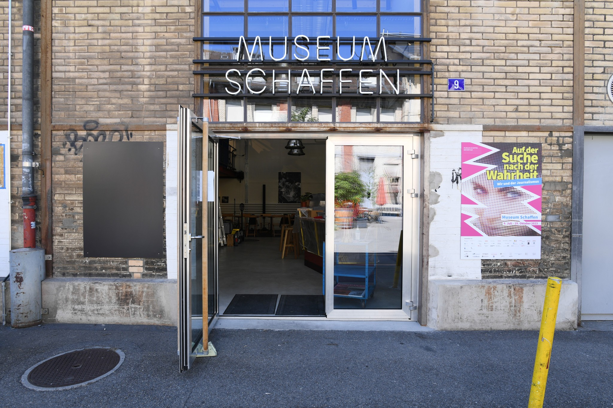
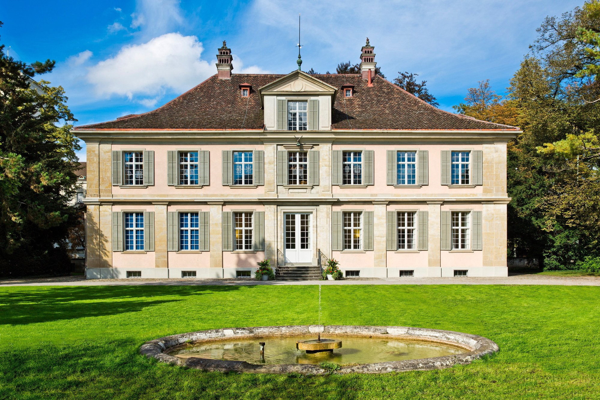
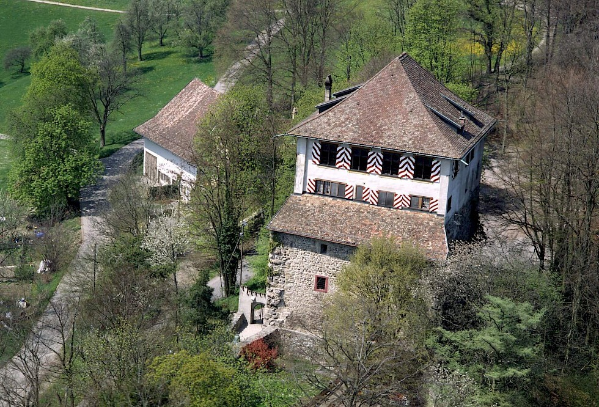

Museen
Der Historische Verein Winterthur trägt drei Häuser. museumschaffen.ch und diese Vereinswebsite gehören zusammen.

Lagerplatz · Winterthur
Museum Schaffen
Das moderne historische Museum widmet sich Arbeit, Migration und Industriegeschichte. Website und Programm: museumschaffen.ch — eine Initiative des HVW.
museumschaffen.ch öffnen
Stadtgeschichte
Museum Lindengut
Bürgerhaus und Heimatmuseum mit Blick auf Alltag, Wohnkultur und Geschichte Winterthurs.
Anlässe im Lindengut
Mittelalter
Schloss Mörsburg
Die mittelalterliche Ritterburg am Stadtrand — Führungen und Anlässe rund um Burgenleben und Region.
Anlässe auf der Mörsburg